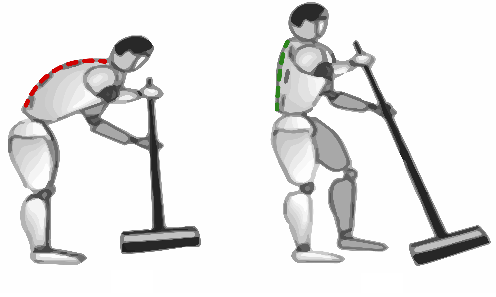

Sobresfuerzos y ergonomía
Durante la jornada laboral nos veremos obligados a mover cargas pesadas, bien sean máquinas que vamos a usar, muebles que tenemos que mover para poder trabajar o bien cubos de agua o de residuos, etc.
Los sobresfuerzos pueden producir lesiones muy dolorosas como lesiones musculares, principalmente de espalda:
Uno de los factores que más afecta a la ergonomía del personal limpiador es la longitud del palo de escoba o fregona. Con un palo más corto tendemos a arquear más la espalda afectando la zona lumbar, por lo tanto deberemos tener un palo lo suficientemente largo como para que, en una posición erguida, alcance el suelo. La postura correcta a la hora de barrer o fregar incluye mantener la espalda recta, una mano sujeta la escoba a la altura de la cadera y la otra lo hace a la altura del pecho. Es importante que no hagamos estiramientos extraños para limpiar zonas más alejadas, limpiaremos alrededor de nosotros mismos y siempre moviendo el cuerpo, es decir, sin hacer giros bruscos de cintura.
Tendremos que adoptar la misma postura para pasar la aspiradora que cuando barremos, pero si nos tenemos que agachar, lo haremos doblando y apoyando una rodilla en el suelo y manteniendo la espalda recta.
Como en el caso de barrer o fregar, vigilaremos que la columna esté siempre erguida sin realizar giros bruscos.
Cuando limpiemos los cristales, deberemos tener cuidado de no hacer escorzos ni movimientos bruscos.
Lo ideal sería invertir periódicamente la postura, sin embargo tendemos a limpiar con nuestra mano dominante, al hacerlo adelantaremos el pie del mismo lado y apoyaremos la mano contraria sobre el marco de la ventana a la altura del hombro buscando un mayor apoyo.